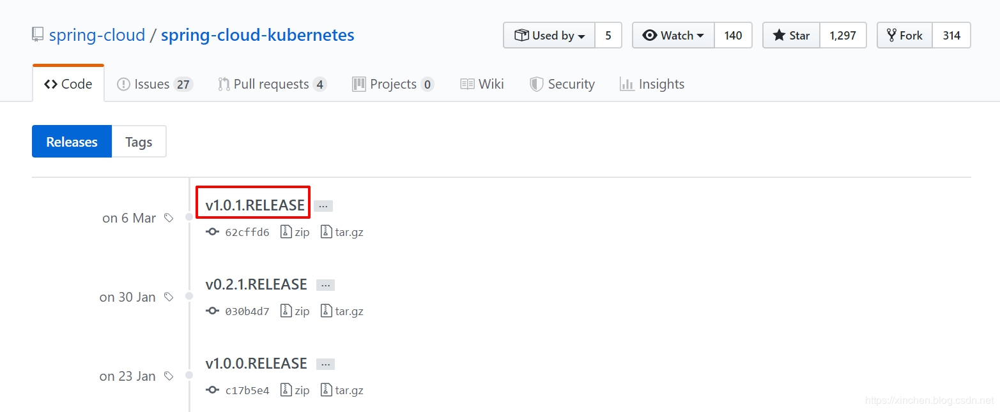
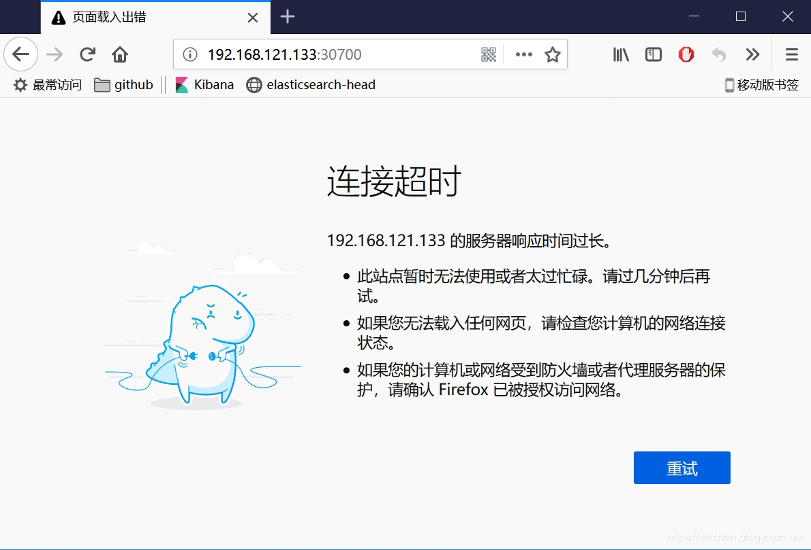
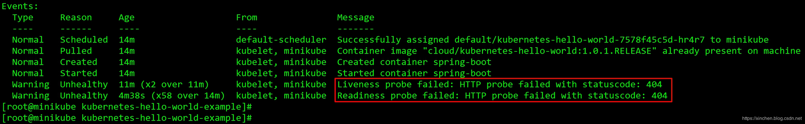
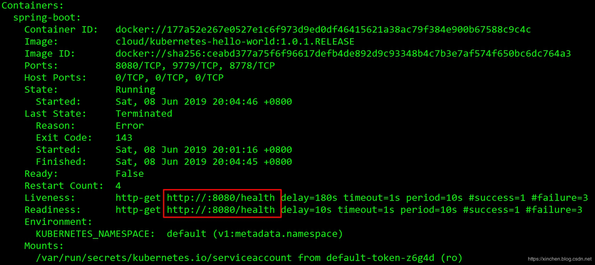
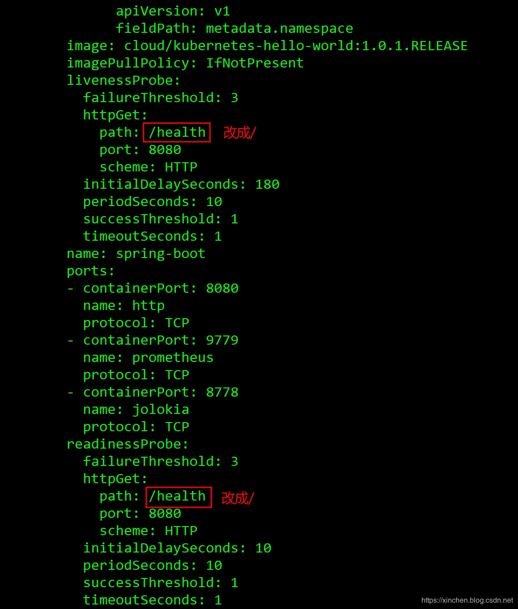
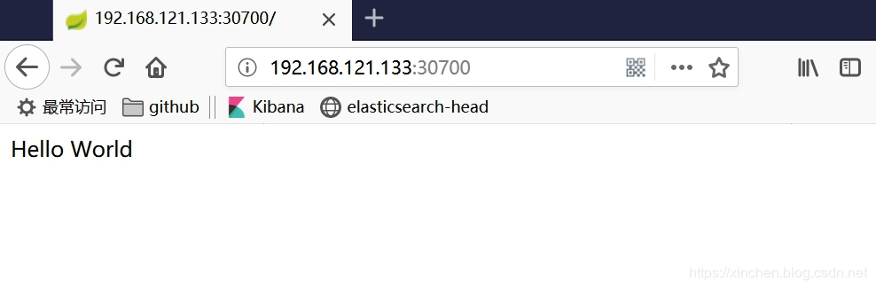
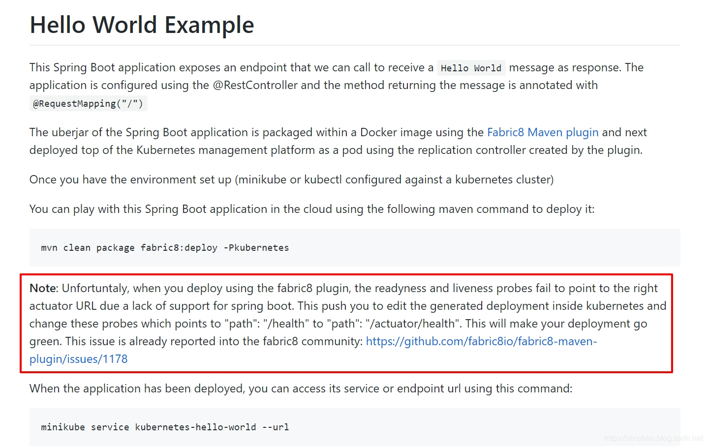

原文连接:https://www.cnblogs.com/bolingcavalry/p/11445732.html
关于spring-cloud-kubernetes
spring-cloud-kubernetes是springcloud官方推出的开源项目，用于将Spring Cloud和Spring Boot应用运行在kubernetes环境，并且提供了通用的接口来调用kubernetes服务，GitHub上官方地址是：https://github.com/spring-cloud/spring-cloud-kubernetes
系列文章列表
本文是《spring-cloud-kubernetes实战系列》的第一篇，全文链接如下：
- 《spring-cloud-kubernetes官方demo运行实战》
- 《你好spring-cloud-kubernetes》
- 《spring-cloud-kubernetes背后的三个关键知识点》
- 《spring-cloud-kubernetes的服务发现和轮询实战(含熔断)》
- 《spring-cloud-kubernetes与SpringCloud Gateway》
- 《spring-cloud-kubernetes与k8s的configmap》
官方demo
官方提供了简单的demo用于快速了解spring-cloud-kubernetes，但是成功运行此demo需要做一些设置和修改，这也是此文的意义所在，接下来我们一起实战这个demo；
环境信息
本次实战的环境和版本信息如下：
- 操作系统：CentOS Linux release 7.6.1810
- minikube：1.1.1
- Java：1.8.0_191
- Maven：3.6.0
- fabric8-maven-plugin插件：3.5.37
- spring-cloud-kubernetes：1.0.1.RELEASE
上面提到的linux、minikube、java、maven，请确保已全部准备好，关于linux环境下minikube的安装和启动请参考《Linux安装minikube指南 》。
下载源码
官方demo包含在整个spring-cloud-kubernetes开源项目中，因此要下载整个开源项目，由于主干的提交一直很活跃，因此最好下载个release版本，我这里下载的是v1.0.1.RELEASE，如下图红框所示，地址是：https://github.com/spring-cloud/spring-cloud-kubernetes/releases

修改maven设置
需要事先修改maven的设置，否则编译构建的时候会报错：
- 打开maven的配置文件settings.xml，完整路径是apache-maven-3.6.0/conf/settings.xm；
- 在settings.xml文件内，找到pluginGroups节点，在里面增加两行，修改完成后效果如下：
<pluginGroups>
<pluginGroup>io.fabric8</pluginGroup>
<pluginGroup>org.springframework.boot</pluginGroup>
</pluginGroups>- 修改完毕保存退出，maven设置完成；
如果您想了解该错误的细节，请参考文章《使用fabric8-maven-plugin插件的错误处理(No plugin found for prefix 'fabric8')》；
编译项目源码
- 将上图中的源码下载解压，得到一个新的文件夹spring-cloud-kubernetes-1.0.1.RELEASE；
- 进入文件夹spring-cloud-kubernetes-1.0.1.RELEASE，执行命令mvn clean compile -U，完全编译整个工程，由于要下载大量依赖库所以较为耗时，我这里是二十分钟以上（这一步不是必须的，看个人爱好吧），构建通过后如下所示：
[INFO] Reactor Summary for Spring Cloud Kubernetes 1.0.1.RELEASE:
[INFO]
[INFO] Spring Cloud Kubernetes :: Dependencies ............ SUCCESS [ 0.077 s]
[INFO] Spring Cloud Kubernetes ............................ SUCCESS [ 2.575 s]
[INFO] Spring Cloud Kubernetes :: Core .................... SUCCESS [01:51 min]
[INFO] Spring Cloud Kubernetes :: Config .................. SUCCESS [ 21.357 s]
[INFO] Spring Cloud Kubernetes :: Discovery ............... SUCCESS [ 6.473 s]
[INFO] Spring Cloud Kubernetes :: Ribbon .................. SUCCESS [ 31.616 s]
[INFO] Spring Cloud Kubernetes :: Starter ................. SUCCESS [ 0.558 s]
[INFO] Spring Cloud Kubernetes :: Starter :: Config ....... SUCCESS [ 0.569 s]
[INFO] Spring Cloud Kubernetes :: Starter :: Ribbon ....... SUCCESS [ 0.595 s]
[INFO] Spring Cloud Kubernetes :: Starter :: All .......... SUCCESS [ 0.571 s]
[INFO] Spring Cloud Kubernetes :: Examples ................ SUCCESS [ 0.558 s]
[INFO] Spring Cloud Kubernetes :: Examples :: Reload ConfigMap SUCCESS [ 9.077 s]
[INFO] Spring Cloud Kubernetes :: Examples :: Hello World . SUCCESS [ 1.323 s]
[INFO] Spring Cloud Kubernetes :: Leader .................. SUCCESS [ 7.395 s]
[INFO] Spring Cloud Kubernetes :: Examples :: Leader Election SUCCESS [ 0.594 s]
[INFO] Spring Cloud Kubernetes :: Istio ................... SUCCESS [ 12.788 s]
[INFO] Spring Cloud Kubernetes :: Integration Tests ....... SUCCESS [ 0.574 s]
[INFO] Spring Cloud Kubernetes :: Integration Tests :: Simple Core SUCCESS [02:14 min]
[INFO] Spring Cloud Kubernetes :: Integration Tests :: Simple Configmap SUCCESS [ 0.646 s]
[INFO] Spring Cloud Kubernetes :: Integration Tests :: Istio SUCCESS [ 0.623 s]
[INFO] Spring Cloud Kubernetes :: Integration Tests :: Discovery Parent SUCCESS [ 0.564 s]
[INFO] Spring Cloud Kubernetes :: Integration Tests :: Discovery Service A SUCCESS [ 0.605 s]
[INFO] Spring Cloud Kubernetes :: Integration Tests :: Discovery Service B SUCCESS [ 0.625 s]
[INFO] Spring Cloud Kubernetes :: Integration Tests :: Discovery Client SUCCESS [ 0.608 s]
[INFO] Spring Cloud Kubernetes :: Integration Tests :: Discovery Tests SUCCESS [ 1.440 s]
[INFO] Spring Cloud Kubernetes Docs ....................... SUCCESS [ 0.583 s]
[INFO] ------------------------------------------------------------------------
[INFO] BUILD SUCCESS
[INFO] ------------------------------------------------------------------------
[INFO] Total time: 05:53 min
[INFO] Finished at: 2019-06-08T19:32:19+08:00
[INFO] ------------------------------------------------------------------------
- 进入目录spring-cloud-kubernetes-1.0.1.RELEASE/spring-cloud-kubernetes-examples/kubernetes-hello-world-example,这里面就是官方的入门demo，执行以下命令开始构建并且会部署到minikube：
mvn clean package fabric8:deploy -Pkubernetes构建和部署完成后，控制台输出以下信息：
...
[INFO] Installing /usr/local/work/demo/spring-cloud-kubernetes-1.0.1.RELEASE/spring-cloud-kubernetes-examples/kubernetes-hello-world-example/target/kubernetes-hello-world-1.0.1.RELEASE-sources.jar to /root/.m2/repository/org/springframework/cloud/kubernetes-hello-world/1.0.1.RELEASE/kubernetes-hello-world-1.0.1.RELEASE-sources.jar
[INFO]
[INFO] <<< fabric8-maven-plugin:3.5.37:deploy (default-cli) < install @ kubernetes-hello-world <<<
[INFO]
[INFO]
[INFO] --- fabric8-maven-plugin:3.5.37:deploy (default-cli) @ kubernetes-hello-world ---
[INFO] F8: Using Kubernetes at https://192.168.121.133:8443/ in namespace default with manifest /usr/local/work/demo/spring-cloud-kubernetes-1.0.1.RELEASE/spring-cloud-kubernetes-examples/kubernetes-hello-world-example/target/classes/META-INF/fabric8/kubernetes.yml
[INFO] Using namespace: default
[INFO] Creating a Service from kubernetes.yml namespace default name kubernetes-hello-world
[INFO] Created Service: spring-cloud-kubernetes-examples/kubernetes-hello-world-example/target/fabric8/applyJson/default/service-kubernetes-hello-world.json
[INFO] Using namespace: default
[INFO] Creating a Deployment from kubernetes.yml namespace default name kubernetes-hello-world
[INFO] Created Deployment: spring-cloud-kubernetes-examples/kubernetes-hello-world-example/target/fabric8/applyJson/default/deployment-kubernetes-hello-world.json
[INFO] F8: HINT: Use the command `kubectl get pods -w` to watch your pods start up
[INFO] ------------------------------------------------------------------------
[INFO] BUILD SUCCESS
[INFO] ------------------------------------------------------------------------
[INFO] Total time: 16.047 s
[INFO] Finished at: 2019-06-08T19:50:50+08:00
[INFO] ------------------------------------------------------------------------- 查看服务，已经创建了，类型是NodePort ,并且将8080端口映射到宿主机的30700端口，说明可以用http://宿主机IP:30700来访问此服务：
[root@minikube kubernetes-hello-world-example]# kubectl get services
NAME TYPE CLUSTER-IP EXTERNAL-IP PORT(S) AGE
kubernetes ClusterIP 10.96.0.1 <none> 443/TCP 10h
kubernetes-hello-world NodePort 10.108.214.207 <none> 8080:30700/TCP 4m- 查看部署，发现始终未能进入READY状态：
[root@minikube kubernetes-hello-world-example]# kubectl get deployments
NAME READY UP-TO-DATE AVAILABLE AGE
kubernetes-hello-world 0/1 1 0 4m46s- 查看pod，发现新建的pod始终未能进入READY状态：
[root@minikube kubernetes-hello-world-example]# kubectl get pods
NAME READY STATUS RESTARTS AGE
kubernetes-hello-world-7578f45c5d-hr4r7 0/1 Running 1 6m从上面的信息可以看出，部署虽然已经完成，但是pod是不可用的，访问网页试试，如下图，果然无法访问：
检查问题
- 执行命令kubectl describe pod kubernetes-hello-world-7578f45c5d-hr4r7检查pod的具体情况，如下图红框所示，两个探针检查都失败了：
 - 再看看控制台输出的pod基本情况，里面有探针的信息，如下图所示，两个探针的地址都是/health：
 - 打开demo的源码，如下所示，根本就没有路径为/health的服务：
@RestController
public class HelloController {
private static final Log log = LogFactory.getLog(HelloController.class);
@Autowired
private DiscoveryClient discoveryClient;
@RequestMapping("/")
public String hello() {
return "Hello World";
}
@RequestMapping("/services")
public List<String> services() {
return this.discoveryClient.getServices();
}
}现在真相大白了：部署到minikube上的pod，配置了探针地址是/health，但是服务中并没有此路径，因此探针检查一直无法通过；
解决问题
搞清楚问题之后就可以动手解决问题了，这里有两种解决方式：
第一种，修改HelloController.java，增加一个方法，对应的地址是/health的服务；
第二种，修改deployment的配置，将探针地址改为现有的服务，例如"/"，这是个可用的服务；
第一种方法很简单，留给读者您来完成吧，我们来试试第二种：
- 执行以下命令，开始编辑deployment：
kubectl edit deployment kubernetes-hello-world- 在编辑页面上找到两个探针的配置，都从"/health"改成"/"，如下图两个红框所示：
 - 修改完毕后，像普通vim操作一样"wq"保存退出，配置会立即生效，稍等一会儿再看pod情况，发现pod的name已经变了，并且状态已经成为Ready，证明旧的pod已经销毁，新的pod被创建并且探针测试通过：
[root@minikube examples]# kubectl get pods
NAME READY STATUS RESTARTS AGE
kubernetes-hello-world-6c5f75ff74-dnm2q 1/1 Running 0 15s访问地址http://192.168.121.133:30700 ，服务正常(192.168.121.133是宿主机IP地址)，如下图：
官方解释
官方的demo无法在minikube上正常运行，还要我们自己去修改配置或者源码，官方的demo不应该会这样，在kubernetes-hello-world-example工程内的README.md文档中发现了对此问题的说明，如下图红框所示，fabric8的maven插件在生成探针配置的是时候配错了URL，因此官方建议我们去修改deployment的配置，将探针的地址从"/health"改为"/actuator/heath"，这个问题已经被提交到了fabric8社区，并且贴出了链接：
权限问题
刚才我们看过了HelloController.java的源码，里面还有个路径为"/services"的接口，在minikube环境下访问此接口可以成功返回，内容是当前minikube环境的服务信息，但是如果部署在正式的kubernetes环境，访问此接口会返回以下错误：
Message: Forbidden!Configured service account doesn't have access. Service account may have been revoked. services is forbidden: User "system:serviceaccount:default:default" cannot list resource "services" in API group "" in the namespace "default"也就是说当前的system:serviceaccount账号是没有权限通过API server访问"services"资源的，此时最快的解决办法是提升账号权限：
kubectl create clusterrolebinding permissive-binding \
--clusterrole=cluster-admin \
--user=admin \
--user=kubelet \
--group=system:serviceaccounts注意：以上办法只能用于开发和测试环境，不要用在生产环境，在生产环境应该参考Kubernetes的RBAC授权相关设置来处理。
修改源码时遇到的错误怎么规避
如果您想尝试修改demo的源码并且部署上去，在编译阶段可能遇到以下问题：
[root@minikube kubernetes-hello-world-example]# mvn clean package fabric8:deploy -Pkubernetes
[INFO] Scanning for projects...
[INFO]
[INFO] ----------< org.springframework.cloud:kubernetes-hello-world >----------
[INFO] Building Spring Cloud Kubernetes :: Examples :: Hello World 1.0.1.RELEASE
[INFO] --------------------------------[ jar ]---------------------------------
[INFO]
[INFO] --- maven-clean-plugin:2.5:clean (default-clean) @ kubernetes-hello-world ---
[INFO] Deleting /usr/local/work/demo/spring-cloud-kubernetes-1.0.1.RELEASE/spring-cloud-kubernetes-examples/kubernetes-hello-world-example/target
[INFO]
[INFO] --- maven-checkstyle-plugin:3.0.0:check (checkstyle-validation) @ kubernetes-hello-world ---
[INFO] 开始检查……
[ERROR] /usr/local/work/demo/spring-cloud-kubernetes-1.0.1.RELEASE/spring-cloud-kubernetes-examples/kubernetes-hello-world-example/src/main/java/org/springframework/cloud/kubernetes/examples/HelloController.java:33: 当前行匹配非法表达式： 'Trailing whitespace'。 [Regexp]
检查完成。
[INFO] ------------------------------------------------------------------------
[INFO] BUILD FAILURE
[INFO] ------------------------------------------------------------------------
[INFO] Total time: 2.976 s
[INFO] Finished at: 2019-06-08T22:15:37+08:00
[INFO] ------------------------------------------------------------------------
[ERROR] Failed to execute goal org.apache.maven.plugins:maven-checkstyle-plugin:3.0.0:check (checkstyle-validation) on project kubernetes-hello-world: Failed during checkstyle execution: There is 1 error reported by Checkstyle 8.12 with checkstyle.xml ruleset. -> [Help 1]
[ERROR]
[ERROR] To see the full stack trace of the errors, re-run Maven with the -e switch.
[ERROR] Re-run Maven using the -X switch to enable full debug logging.
[ERROR]
[ERROR] For more information about the errors and possible solutions, please read the following articles:
[ERROR] [Help 1] http://cwiki.apache.org/confluence/display/MAVEN/MojoExecutionException出现上述问题的原因是maven-checkstyle-plugin插件检查代码的style没有通过，我试过在mvn命令中添加skip参数，也试过在pom.xml中添加maven-checkstyle-plugin节点并且配置为skip，结果都没有用，最终用以下方法成功规避了此问题：
- 打开pom.xml文件；
- 找到节点properties(如果没有就创建)，增加以下三个属性配置，这样配置的作用是在style检查失败、校验失败、单元测试代码检查失败这三种情况下，都不会导致整个maven构建的失败：
<properties>
<maven-checkstyle-plugin.failsOnError>false</maven-checkstyle-plugin.failsOnError>
<maven-checkstyle-plugin.failsOnViolation>false</maven-checkstyle-plugin.failsOnViolation>
<maven-checkstyle-plugin.includeTestSourceDirectory>false</maven-checkstyle-plugin.includeTestSourceDirectory></properties>至此，官方demo的部署和运行都完成了，对spring-cloud-kubernetes算是有了初步认识，接下来的实战中，我们一起去深入的了解spring-cloud-kubernetes，看看kubernetes上的springcloud应用怎么开发；
欢迎关注我的公众号：程序员欣宸